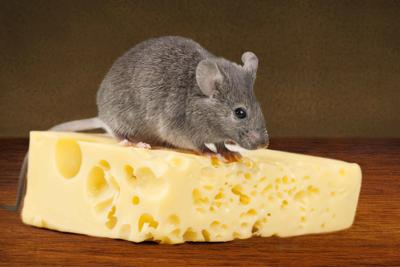

A grilled cheese consists of only these following items. Cheese. Bread with spread (usually butter). This entire subreddit consist of "melts". Almost every "grilled cheese" sandwich i see on here has other items added to it. The fact that this subreddit is called "grilledcheese" is nothing short of utter blasphemy. Let me start out by saying I have nothing against melts, I just hate their association with sandwiches that are not grilled cheeses. Adding cheese to your tuna sandwich? It's called a Tuna melt. Totally different. Want to add bacon and some pretentious bread crumbs with spinach? I don't know what the hell you'd call that but it's not a grilled cheese. I would be more than willing to wager I've eaten more grilled cheeses in my 21 years than any of you had in your entire lives. I have one almost everyday and sometimes more than just one sandwich. Want to personalize your grilled cheese? Use a mix of different cheeses or use sourdough or french bread. But if you want to add some pulled pork and take a picture of it, make your own subreddit entitled "melts" because that is not a fucking grilled cheese. I'm not a religious man nor am I anything close to a culinary expert. But as a bland white mid-western male I am honestly the most passionate person when it comes to grilled cheese and mac & cheese. All of you foodies stay the hell away from our grilled cheeses and stop associating your sandwich melts with them. Yet again, it is utter blasphemy and it rocks me to the core of my pale being. Shit, I stopped lurking after 3 years and made this account for the sole purpose of posting this. I've seen post after post of peoples "grilled cheeses" all over reddit and it's been driving me insane. The moment i saw this subreddit this morning I finally snapped. Hell, I may even start my own subreddit just because I know this one exists now. You god damn heretics. Respect the grilled cheese and stop changing it into whatever you like and love it for it what it is. Or make your damn melt sandwich and call it for what it is. A melt."
Harry Potter should have carried a 1911 Ok, this has been driving me crazy for seven movies now, and I know you're going to roll your eyes, but hear me out: Harry Potter should have carried a 1911. Here's why: Think about how quickly the entire WWWIII (Wizarding-World War III) would have ended if all of the good guys had simply armed up with good ol' American hot lead. Basilisk? Let's see how tough it is when you shoot it with a .470 Nitro Express. Worried about its Medusa-gaze? Wear night vision goggles. The image is light-amplified and re-transmitted to your eyes. You aren't looking at it--you're looking at a picture of it. Imagine how epic the first movie would be if Harry had put a breeching charge on the bathroom wall, flash-banged the hole, and then went in wearing NVGs and a Kevlar-weave stab-vest, carrying a SPAS-12. And have you noticed that only Europe seems to a problem with Deatheaters? Maybe it's because Americans have spent the last 200 years shooting deer, playing GTA: Vice City, and keeping an eye out for black helicopters over their compounds. Meanwhile, Brits have been cutting their steaks with spoons. Remember: gun-control means that Voldemort wins. God made wizards and God made muggles, but Samuel Colt made them equal. Now I know what you're going to say: "But a wizard could just disarm someone with a gun!" Yeah, well they can also disarm someone with a wand (as they do many times throughout the books/movies). But which is faster: saying a spell or pulling a trigger? Avada Kedavra, meet Avtomat Kalashnikova. Imagine Harry out in the woods, wearing his invisibility cloak, carrying a .50bmg Barrett, turning Deatheaters into pink mist, scratching a lightning bolt into his rifle stock for each kill. I don't think Madam Pomfrey has any spells that can scrape your brains off of the trees and put you back together after something like that. Voldemort's wand may be 13.5 inches with a Phoenix-feather core, but Harry's would be 0.50 inches with a tungsten core. Let's see Voldy wave his at 3,000 feet per second. Better hope you have some Essence of Dittany for that sucking chest wound. I can see it now...Voldemort roaring with evil laughter and boasting to Harry that he can't be killed, since he is protected by seven Horcruxes, only to have Harry give a crooked grin, flick his cigarette butt away, and deliver what would easily be the best one-liner in the entire series: "Well then I guess it's a good thing my 1911 holds 7+1." And that is why Harry Potter should have carried a 1911.
